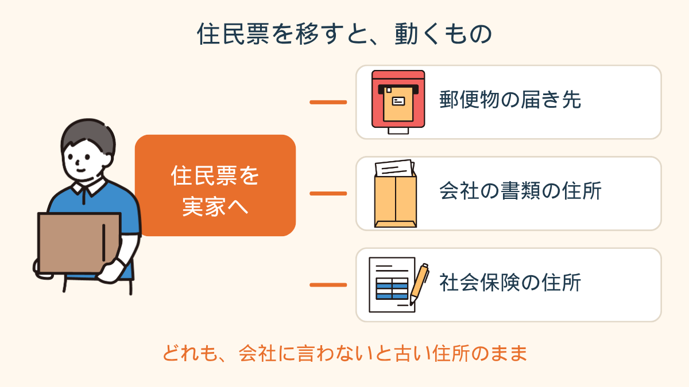
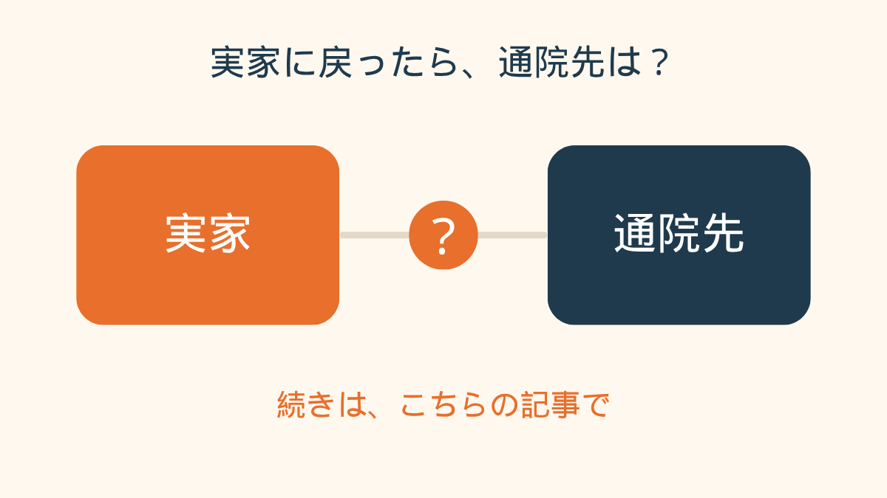
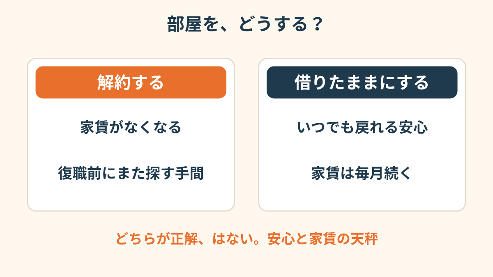
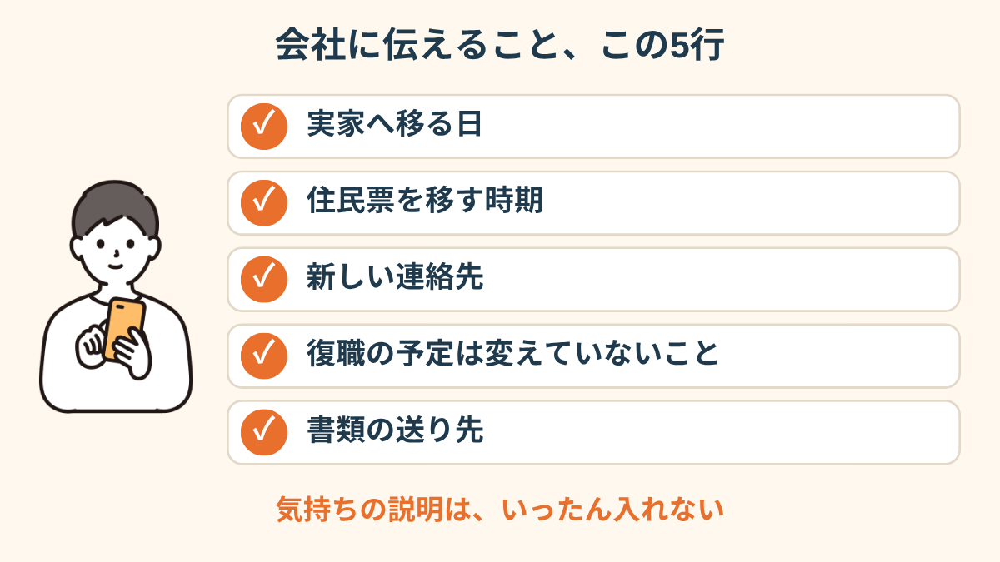
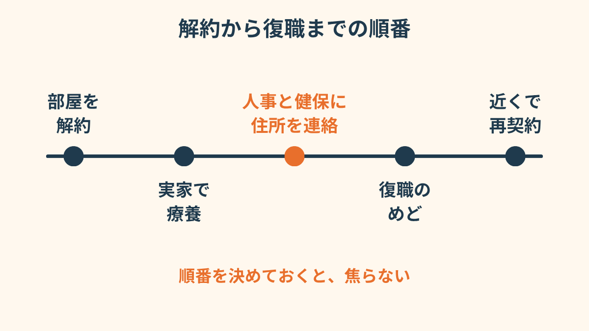
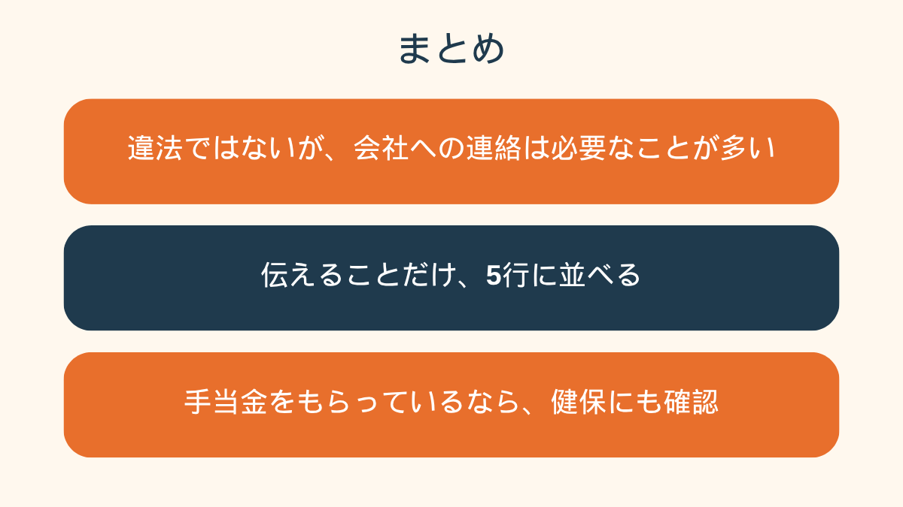

それを人事に言うかどうかで、私は2日、スマホを握ったまま固まっていました。
引っ越しの荷造りより、そっちのほうがずっと重かったんです。
会社の近くの部屋を、解約した
休職に入って、数ヶ月。
毎月の家賃を見るたびに、「この部屋、誰も使ってないのに」って思うようになりました。
昼も夜もほとんど布団の中で、窓から見えるのは、通勤で毎朝歩いた道だけ。
実家に戻れば、とりあえず食べるものも、人の気配もある。
復職できそうになったら、また会社の近くで借り直せばいい。
そう決めて、先に部屋のほうを解約しました。
で、そこで気づいたんです。
住民票って、どうなるんだろう、って。
休職してる人間が、勝手に引っ越していいんだろうか。
しかも住民票まで動かして、会社には何も言わないまま。
なんか、ずるいことをしてるみたいな気がして。
住民票を動かしたら、何が起きるのか
夜中に調べて、いちばん引っかかったのはここでした。
違法かどうか、じゃなくて、会社に何が届いて、何が届かなくなるのか。

読んでいくうちに、分かってきました。
違法じゃない、とは書いてあるのに、「会社に言わなくていい」とは、どこにも書いてない。
理由はだいたい同じで、郵便物と、書類と、社会保険の住所。
私の知らないところで、会社の書類が昔の部屋に届き続ける、なんてことも起きうる。
「引っ越したのを黙ってたら、会社からの封筒が前の住所に届いてて。管理会社から連絡が来て、血の気が引きました。休職してるときほど、そういう小さい事故が怖いです」

実家に戻ったあとの、通院先の決め方を読む →「言わなきゃ」と「言いたくない」のあいだ
頭では、言ったほうがいいと分かってるんです。
でも人事に「引っ越しました」と書くのは、
「もう戻る気ないんでしょ」と思われそうで、手が止まる。
実際は、復職するつもりでした。
体調が戻ったら、また会社の近くに住む。そのための、いったん実家、のつもり。
でも、その「つもり」は、人事の人には見えないんですよね。

「実家に戻るって、自分では『回復のため』なのに、会社に書くと『逃げた』って読まれる気がして。文章にした瞬間に、意味が変わっちゃう感じがしました」
聞く前に、メモを5行書いた
結局、言い方を考えるのをやめて、伝えることだけ紙に書きました。
「いつから実家か」「住民票を移すか、移すならいつか」「連絡先（電話・住所）」「復職の予定は変えていないこと」「書類の送り先をどうすればいいか」。
これだけ。気持ちの説明は、いったん入れない。

人事に連絡したのは、翌日です。
返事は拍子抜けするくらい短くて、「承知しました。住所変更の用紙を送りますね」。
私が2日悩んだぶんは、どこにも反映されていませんでした。
ただ、傷病手当金をもらっている人は、加入先の健保にも住所の連絡が要る場合があるようです。
そこは会社と別なので、私は人事に聞いたあと、健保にも1本、電話を入れました。


この記事に、聞いてみたいことはありますか？
「自分の場合はどうなんだろう」と思ったことを、気軽に書いてみてください。いただいた質問は個別にお返事したうえで、匿名で記事にすることがあります。